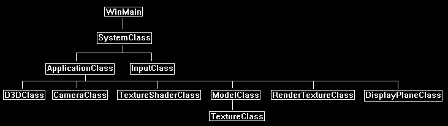
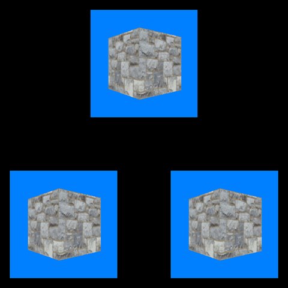

This tutorial will cover how to implement render to texture in DirectX 11.
The code in this tutorial is based on the previous tutorials.
Render to texture allows you to render your scene to a texture resource instead of just the back buffer.
You can then use that texture resource in your current scene to achieve numerous effects.
For example, you could render the scene from a different camera angle and then use that texture in a mirror or video screen.
You can also do some processing on that texture or use a special shader to render it to achieve even more unique effects.
The list of things you can do with render textures are endless and is the reason why it is one of the most powerful tools in DirectX 11.
However, you will notice that render textures are very expensive as you are now rendering your scene multiple times instead of just once.
This is where most 3D engines will start to lose their speed, but the effects that can be done make it worth the cost.
For this tutorial we will render the spinning 3D cube model to a render texture first.
We will then render our main scene using three flat 3D planes.
Each 3D plane will use the render texture as it's texture resource.
The render texture will be given a light blue background so you can see exactly what is the render texture.
We will start the tutorial by looking at the updated frame work.
Framework
The frame work has two new classes called RenderTextureClass and DisplayPlaneClass.

Rendertextureclass.h
The RenderTextureClass allows you to set it as the render target instead of the back buffer.
It also allows you to retrieve the data rendered to it in the form of a regular texture.
////////////////////////////////////////////////////////////////////////////////
// Filename: rendertextureclass.h
////////////////////////////////////////////////////////////////////////////////
#ifndef _RENDERTEXTURECLASS_H_
#define _RENDERTEXTURECLASS_H_
//////////////
// INCLUDES //
//////////////
#include <d3d11.h>
#include <directxmath.h>
using namespace DirectX;
////////////////////////////////////////////////////////////////////////////////
// Class name: RenderTextureClass
////////////////////////////////////////////////////////////////////////////////
class RenderTextureClass
{
public:
RenderTextureClass();
RenderTextureClass(const RenderTextureClass&);
~RenderTextureClass();
bool Initialize(ID3D11Device*, int, int, float, float, int);
void Shutdown();
void SetRenderTarget(ID3D11DeviceContext*);
void ClearRenderTarget(ID3D11DeviceContext*, float, float, float, float);
ID3D11ShaderResourceView* GetShaderResourceView();
void GetProjectionMatrix(XMMATRIX&);
void GetOrthoMatrix(XMMATRIX&);
int GetTextureWidth();
int GetTextureHeight();
private:
int m_textureWidth, m_textureHeight;
ID3D11Texture2D* m_renderTargetTexture;
ID3D11RenderTargetView* m_renderTargetView;
ID3D11ShaderResourceView* m_shaderResourceView;
ID3D11Texture2D* m_depthStencilBuffer;
ID3D11DepthStencilView* m_depthStencilView;
D3D11_VIEWPORT m_viewport;
XMMATRIX m_projectionMatrix;
XMMATRIX m_orthoMatrix;
};
#endif
Rendertextureclass.cpp
////////////////////////////////////////////////////////////////////////////////
// Filename: rendertextureclass.cpp
////////////////////////////////////////////////////////////////////////////////
#include "rendertextureclass.h"
The class constructor will initialize the private pointers to null.
RenderTextureClass::RenderTextureClass()
{
m_renderTargetTexture = 0;
m_renderTargetView = 0;
m_shaderResourceView = 0;
m_depthStencilBuffer = 0;
m_depthStencilView = 0;
}
RenderTextureClass::RenderTextureClass(const RenderTextureClass& other)
{
}
RenderTextureClass::~RenderTextureClass()
{
}
The Initialize function will do the setup of the render texture object.
The function creates a render target texture by first setting up the description of the texture and then creating that texture.
It then uses that texture to setup a render target view so that the texture can be drawn to as a render target.
The third thing we do is create a shader resource view of that texture so that we can supply the rendered data to calling objects.
This function will also create a projection and ortho matrix for correct perspective rendering of the render texture, since the dimensions of the render texture may vary.
Remember to always keep the aspect ratio of this render to texture the same as the aspect ratio of where the texture will be used, or there will be some size distortion.
bool RenderTextureClass::Initialize(ID3D11Device* device, int textureWidth, int textureHeight, float screenDepth, float screenNear, int format)
{
D3D11_TEXTURE2D_DESC textureDesc;
HRESULT result;
D3D11_RENDER_TARGET_VIEW_DESC renderTargetViewDesc;
D3D11_SHADER_RESOURCE_VIEW_DESC shaderResourceViewDesc;
D3D11_TEXTURE2D_DESC depthBufferDesc;
D3D11_DEPTH_STENCIL_VIEW_DESC depthStencilViewDesc;
DXGI_FORMAT textureFormat;
// Set the texture format.
switch(format)
{
case 1:
{
textureFormat = DXGI_FORMAT_R8G8B8A8_UNORM;
break;
}
default:
{
textureFormat = DXGI_FORMAT_R8G8B8A8_UNORM;
break;
}
}
// Store the width and height of the render texture.
m_textureWidth = textureWidth;
m_textureHeight = textureHeight;
// Initialize the render target texture description.
ZeroMemory(&textureDesc, sizeof(textureDesc));
// Setup the render target texture description.
textureDesc.Width = textureWidth;
textureDesc.Height = textureHeight;
textureDesc.MipLevels = 1;
textureDesc.ArraySize = 1;
textureDesc.Format = textureFormat;
textureDesc.SampleDesc.Count = 1;
textureDesc.Usage = D3D11_USAGE_DEFAULT;
textureDesc.BindFlags = D3D11_BIND_RENDER_TARGET | D3D11_BIND_SHADER_RESOURCE;
textureDesc.CPUAccessFlags = 0;
textureDesc.MiscFlags = 0;
// Create the render target texture.
result = device->CreateTexture2D(&textureDesc, NULL, &m_renderTargetTexture);
if(FAILED(result))
{
return false;
}
// Setup the description of the render target view.
renderTargetViewDesc.Format = textureDesc.Format;
renderTargetViewDesc.ViewDimension = D3D11_RTV_DIMENSION_TEXTURE2D;
renderTargetViewDesc.Texture2D.MipSlice = 0;
// Create the render target view.
result = device->CreateRenderTargetView(m_renderTargetTexture, &renderTargetViewDesc, &m_renderTargetView);
if(FAILED(result))
{
return false;
}
// Setup the description of the shader resource view.
shaderResourceViewDesc.Format = textureDesc.Format;
shaderResourceViewDesc.ViewDimension = D3D11_SRV_DIMENSION_TEXTURE2D;
shaderResourceViewDesc.Texture2D.MostDetailedMip = 0;
shaderResourceViewDesc.Texture2D.MipLevels = 1;
// Create the shader resource view.
result = device->CreateShaderResourceView(m_renderTargetTexture, &shaderResourceViewDesc, &m_shaderResourceView);
if(FAILED(result))
{
return false;
}
// Initialize the description of the depth buffer.
ZeroMemory(&depthBufferDesc, sizeof(depthBufferDesc));
// Set up the description of the depth buffer.
depthBufferDesc.Width = textureWidth;
depthBufferDesc.Height = textureHeight;
depthBufferDesc.MipLevels = 1;
depthBufferDesc.ArraySize = 1;
depthBufferDesc.Format = DXGI_FORMAT_D24_UNORM_S8_UINT;
depthBufferDesc.SampleDesc.Count = 1;
depthBufferDesc.SampleDesc.Quality = 0;
depthBufferDesc.Usage = D3D11_USAGE_DEFAULT;
depthBufferDesc.BindFlags = D3D11_BIND_DEPTH_STENCIL;
depthBufferDesc.CPUAccessFlags = 0;
depthBufferDesc.MiscFlags = 0;
// Create the texture for the depth buffer using the filled out description.
result = device->CreateTexture2D(&depthBufferDesc, NULL, &m_depthStencilBuffer);
if(FAILED(result))
{
return false;
}
// Initailze the depth stencil view description.
ZeroMemory(&depthStencilViewDesc, sizeof(depthStencilViewDesc));
// Set up the depth stencil view description.
depthStencilViewDesc.Format = DXGI_FORMAT_D24_UNORM_S8_UINT;
depthStencilViewDesc.ViewDimension = D3D11_DSV_DIMENSION_TEXTURE2D;
depthStencilViewDesc.Texture2D.MipSlice = 0;
// Create the depth stencil view.
result = device->CreateDepthStencilView(m_depthStencilBuffer, &depthStencilViewDesc, &m_depthStencilView);
if(FAILED(result))
{
return false;
}
// Setup the viewport for rendering.
m_viewport.Width = (float)textureWidth;
m_viewport.Height = (float)textureHeight;
m_viewport.MinDepth = 0.0f;
m_viewport.MaxDepth = 1.0f;
m_viewport.TopLeftX = 0;
m_viewport.TopLeftY = 0;
// Setup the projection matrix.
m_projectionMatrix = XMMatrixPerspectiveFovLH((3.141592654f / 4.0f), ((float)textureWidth / (float)textureHeight), screenNear, screenDepth);
// Create an orthographic projection matrix for 2D rendering.
m_orthoMatrix = XMMatrixOrthographicLH((float)textureWidth, (float)textureHeight, screenNear, screenDepth);
return true;
}
Shutdown releases the interfaces used by the RenderTextureClass.
void RenderTextureClass::Shutdown()
{
if(m_depthStencilView)
{
m_depthStencilView->Release();
m_depthStencilView = 0;
}
if(m_depthStencilBuffer)
{
m_depthStencilBuffer->Release();
m_depthStencilBuffer = 0;
}
if(m_shaderResourceView)
{
m_shaderResourceView->Release();
m_shaderResourceView = 0;
}
if(m_renderTargetView)
{
m_renderTargetView->Release();
m_renderTargetView = 0;
}
if(m_renderTargetTexture)
{
m_renderTargetTexture->Release();
m_renderTargetTexture = 0;
}
return;
}
The SetRenderTarget function changes where we are currently rendering to.
We are usually rendering to the back buffer (or another render texture), but when we call this function, we will now be rendering to this render texture.
Note that we also need to set the viewport for this render texture, since the dimensions might be different than the back buffer or wherever we were rendering to before this function was called.
void RenderTextureClass::SetRenderTarget(ID3D11DeviceContext* deviceContext)
{
// Bind the render target view and depth stencil buffer to the output render pipeline.
deviceContext->OMSetRenderTargets(1, &m_renderTargetView, m_depthStencilView);
// Set the viewport.
deviceContext->RSSetViewports(1, &m_viewport);
return;
}
The ClearRenderTarget function is called right before rendering to this render texture so that the texture and the depth buffer are cleared from their previous contents.
void RenderTextureClass::ClearRenderTarget(ID3D11DeviceContext* deviceContext, float red, float green, float blue, float alpha)
{
float color[4];
// Setup the color to clear the buffer to.
color[0] = red;
color[1] = green;
color[2] = blue;
color[3] = alpha;
// Clear the back buffer.
deviceContext->ClearRenderTargetView(m_renderTargetView, color);
// Clear the depth buffer.
deviceContext->ClearDepthStencilView(m_depthStencilView, D3D11_CLEAR_DEPTH, 1.0f, 0);
return;
}
The GetShaderResourceView function gives us access to the texture for this render texture object.
Once the render texture has been rendered to the data of this texture is now useable as a shader texture resource the same as any other TextureClass object.
ID3D11ShaderResourceView* RenderTextureClass::GetShaderResourceView()
{
return m_shaderResourceView;
}
The following four helper functions return the dimensions, the projection matrix, and ortho matrix for this render texture object.
void RenderTextureClass::GetProjectionMatrix(XMMATRIX& projectionMatrix)
{
projectionMatrix = m_projectionMatrix;
return;
}
void RenderTextureClass::GetOrthoMatrix(XMMATRIX& orthoMatrix)
{
orthoMatrix = m_orthoMatrix;
return;
}
int RenderTextureClass::GetTextureWidth()
{
return m_textureWidth;
}
int RenderTextureClass::GetTextureHeight()
{
return m_textureHeight;
}
Displayplaneclass.h
The DisplayPlaneClass is an object that creates a 2D plane made up of two triangles.
It can be rendered anywhere in 3D space.
This makes it the perfect object for testing the render texture.
It works similar to the BitmapClass, but it is meant for 3D rendering instead.
////////////////////////////////////////////////////////////////////////////////
// Filename: displayplaneclass.h
////////////////////////////////////////////////////////////////////////////////
#ifndef _DISPLAYPLANECLASS_H_
#define _DISPLAYPLANECLASS_H_
///////////////////////
// MY CLASS INCLUDES //
///////////////////////
#include "d3dclass.h"
////////////////////////////////////////////////////////////////////////////////
// Class name: DisplayPlaneClass
////////////////////////////////////////////////////////////////////////////////
class DisplayPlaneClass
{
private:
struct VertexType
{
XMFLOAT3 position;
XMFLOAT2 texture;
};
public:
DisplayPlaneClass();
DisplayPlaneClass(const DisplayPlaneClass&);
~DisplayPlaneClass();
bool Initialize(ID3D11Device*, float, float);
void Shutdown();
void Render(ID3D11DeviceContext*);
int GetIndexCount();
private:
bool InitializeBuffers(ID3D11Device*, float, float);
void ShutdownBuffers();
void RenderBuffers(ID3D11DeviceContext*);
private:
ID3D11Buffer *m_vertexBuffer, *m_indexBuffer;
int m_vertexCount, m_indexCount;
};
#endif
Displayplaneclass.cpp
////////////////////////////////////////////////////////////////////////////////
// Filename: displayplaneclass.cpp
////////////////////////////////////////////////////////////////////////////////
#include "displayplaneclass.h"
DisplayPlaneClass::DisplayPlaneClass()
{
m_vertexBuffer = 0;
m_indexBuffer = 0;
}
DisplayPlaneClass::DisplayPlaneClass(const DisplayPlaneClass& other)
{
}
DisplayPlaneClass::~DisplayPlaneClass()
{
}
The width and height input are in 3D coordinates.
For example, in this tutorial the width and height are both 1.0f.
Make sure that the aspect ratio used to create the DisplayPlane object correlates to the dimensions used to create the render texture, otherwise the texture will be stretched incorrectly.
bool DisplayPlaneClass::Initialize(ID3D11Device* device, float width, float height)
{
bool result;
// Initialize the vertex and index buffer that hold the geometry for the button.
result = InitializeBuffers(device, width, height);
if(!result)
{
return false;
}
return true;
}
void DisplayPlaneClass::Shutdown()
{
// Release the vertex and index buffers.
ShutdownBuffers();
return;
}
void DisplayPlaneClass::Render(ID3D11DeviceContext* deviceContext)
{
// Put the vertex and index buffers on the graphics pipeline to prepare them for drawing.
RenderBuffers(deviceContext);
return;
}
int DisplayPlaneClass::GetIndexCount()
{
return m_indexCount;
}
Similar to the BitmapClass we just create a two triangle object as the model that will be rendered.
bool DisplayPlaneClass::InitializeBuffers(ID3D11Device* device, float width, float height)
{
VertexType* vertices;
unsigned long* indices;
D3D11_BUFFER_DESC vertexBufferDesc, indexBufferDesc;
D3D11_SUBRESOURCE_DATA vertexData, indexData;
HRESULT result;
int i;
// Set the number of vertices in the vertex array.
m_vertexCount = 6;
// Set the number of indices in the index array.
m_indexCount = m_vertexCount;
// Create the vertex array.
vertices = new VertexType[m_vertexCount];
// Create the index array.
indices = new unsigned long[m_indexCount];
// Load the vertex array with data.
// First triangle.
vertices[0].position = XMFLOAT3(-width, height, 0.0f); // Top left.
vertices[0].texture = XMFLOAT2(0.0f, 0.0f);
vertices[1].position = XMFLOAT3(width, -height, 0.0f); // Bottom right.
vertices[1].texture = XMFLOAT2(1.0f, 1.0f);
vertices[2].position = XMFLOAT3(-width, -height, 0.0f); // Bottom left.
vertices[2].texture = XMFLOAT2(0.0f, 1.0f);
// Second triangle.
vertices[3].position = XMFLOAT3(-width, height, 0.0f); // Top left.
vertices[3].texture = XMFLOAT2(0.0f, 0.0f);
vertices[4].position = XMFLOAT3(width, height, 0.0f); // Top right.
vertices[4].texture = XMFLOAT2(1.0f, 0.0f);
vertices[5].position = XMFLOAT3(width, -height, 0.0f); // Bottom right.
vertices[5].texture = XMFLOAT2(1.0f, 1.0f);
// Load the index array with data.
for(i=0; i<m_indexCount; i++)
{
indices[i] = i;
}
// Set up the description of the vertex buffer.
vertexBufferDesc.Usage = D3D11_USAGE_DEFAULT;
vertexBufferDesc.ByteWidth = sizeof(VertexType) * m_vertexCount;
vertexBufferDesc.BindFlags = D3D11_BIND_VERTEX_BUFFER;
vertexBufferDesc.CPUAccessFlags = 0;
vertexBufferDesc.MiscFlags = 0;
vertexBufferDesc.StructureByteStride = 0;
// Give the subresource structure a pointer to the vertex data.
vertexData.pSysMem = vertices;
vertexData.SysMemPitch = 0;
vertexData.SysMemSlicePitch = 0;
// Now finally create the vertex buffer.
result = device->CreateBuffer(&vertexBufferDesc, &vertexData, &m_vertexBuffer);
if(FAILED(result))
{
return false;
}
// Set up the description of the index buffer.
indexBufferDesc.Usage = D3D11_USAGE_DEFAULT;
indexBufferDesc.ByteWidth = sizeof(unsigned long) * m_indexCount;
indexBufferDesc.BindFlags = D3D11_BIND_INDEX_BUFFER;
indexBufferDesc.CPUAccessFlags = 0;
indexBufferDesc.MiscFlags = 0;
indexBufferDesc.StructureByteStride = 0;
// Give the subresource structure a pointer to the index data.
indexData.pSysMem = indices;
indexData.SysMemPitch = 0;
indexData.SysMemSlicePitch = 0;
// Create the index buffer.
result = device->CreateBuffer(&indexBufferDesc, &indexData, &m_indexBuffer);
if(FAILED(result))
{
return false;
}
// Release the arrays now that the vertex and index buffers have been created and loaded.
delete [] vertices;
vertices = 0;
delete [] indices;
indices = 0;
return true;
}
void DisplayPlaneClass::ShutdownBuffers()
{
// Release the index buffer.
if(m_indexBuffer)
{
m_indexBuffer->Release();
m_indexBuffer = 0;
}
// Release the vertex buffer.
if(m_vertexBuffer)
{
m_vertexBuffer->Release();
m_vertexBuffer = 0;
}
return;
}
void DisplayPlaneClass::RenderBuffers(ID3D11DeviceContext* deviceContext)
{
unsigned int stride;
unsigned int offset;
// Set vertex buffer stride and offset.
stride = sizeof(VertexType);
offset = 0;
// Set the vertex buffer to active in the input assembler so it can be rendered.
deviceContext->IASetVertexBuffers(0, 1, &m_vertexBuffer, &stride, &offset);
// Set the index buffer to active in the input assembler so it can be rendered.
deviceContext->IASetIndexBuffer(m_indexBuffer, DXGI_FORMAT_R32_UINT, 0);
// Set the type of primitive that should be rendered from this vertex buffer, in this case triangles.
deviceContext->IASetPrimitiveTopology(D3D11_PRIMITIVE_TOPOLOGY_TRIANGLELIST);
return;
}
Applicationclass.h
The ApplicationClass now includes the RenderTextureClass and DisplayPlaneClass.
////////////////////////////////////////////////////////////////////////////////
// Filename: applicationclass.h
////////////////////////////////////////////////////////////////////////////////
#ifndef _APPLICATIONCLASS_H_
#define _APPLICATIONCLASS_H_
///////////////////////
// MY CLASS INCLUDES //
///////////////////////
#include "d3dclass.h"
#include "inputclass.h"
#include "cameraclass.h"
#include "modelclass.h"
#include "textureshaderclass.h"
#include "rendertextureclass.h"
#include "displayplaneclass.h"
/////////////
// GLOBALS //
/////////////
const bool FULL_SCREEN = false;
const bool VSYNC_ENABLED = true;
const float SCREEN_DEPTH = 1000.0f;
const float SCREEN_NEAR = 0.3f;
////////////////////////////////////////////////////////////////////////////////
// Class name: ApplicationClass
////////////////////////////////////////////////////////////////////////////////
class ApplicationClass
{
public:
ApplicationClass();
ApplicationClass(const ApplicationClass&);
~ApplicationClass();
bool Initialize(int, int, HWND);
void Shutdown();
bool Frame(InputClass*);
private:
bool Render();
bool RenderSceneToTexture(float);
private:
D3DClass* m_Direct3D;
CameraClass* m_Camera;
ModelClass* m_Model;
TextureShaderClass* m_TextureShader;
RenderTextureClass* m_RenderTexture;
DisplayPlaneClass* m_DisplayPlane;
};
#endif
Applicationclass.cpp
////////////////////////////////////////////////////////////////////////////////
// Filename: applicationclass.cpp
////////////////////////////////////////////////////////////////////////////////
#include "applicationclass.h"
ApplicationClass::ApplicationClass()
{
m_Direct3D = 0;
m_Camera = 0;
m_Model = 0;
m_TextureShader = 0;
m_RenderTexture = 0;
m_DisplayPlane = 0;
}
ApplicationClass::ApplicationClass(const ApplicationClass& other)
{
}
ApplicationClass::~ApplicationClass()
{
}
bool ApplicationClass::Initialize(int screenWidth, int screenHeight, HWND hwnd)
{
char modelFilename[128], textureFilename[128];
bool result;
// Create and initialize the Direct3D object.
m_Direct3D = new D3DClass;
result = m_Direct3D->Initialize(screenWidth, screenHeight, VSYNC_ENABLED, hwnd, FULL_SCREEN, SCREEN_DEPTH, SCREEN_NEAR);
if(!result)
{
MessageBox(hwnd, L"Could not initialize Direct3D", L"Error", MB_OK);
return false;
}
// Create and initialize the camera object.
m_Camera = new CameraClass;
m_Camera->SetPosition(0.0f, 0.0f, -10.0f);
m_Camera->Render();
Setup the regular cube model for rendering.
// Set the file name of the model.
strcpy_s(modelFilename, "../Engine/data/cube.txt");
// Set the file name of the texture.
strcpy_s(textureFilename, "../Engine/data/stone01.tga");
// Create and initialize the model object.
m_Model = new ModelClass;
result = m_Model->Initialize(m_Direct3D->GetDevice(), m_Direct3D->GetDeviceContext(), modelFilename, textureFilename);
if(!result)
{
MessageBox(hwnd, L"Could not initialize the model object.", L"Error", MB_OK);
return false;
}
We will use the TextureShaderClass for rendering the cube scene as well as the display planes.
// Create and initialize the texture shader object.
m_TextureShader = new TextureShaderClass;
result = m_TextureShader->Initialize(m_Direct3D->GetDevice(), hwnd);
if(!result)
{
MessageBox(hwnd, L"Could not initialize the texture shader object.", L"Error", MB_OK);
return false;
}
We create the render texture object here.
The resolution is set to 256x256.
We use the same settings for the render texture's depth buffer as we do for the regular screen.
// Create and initialize the render to texture object.
m_RenderTexture = new RenderTextureClass;
result = m_RenderTexture->Initialize(m_Direct3D->GetDevice(), 256, 256, SCREEN_DEPTH, SCREEN_NEAR, 1);
if(!result)
{
return false;
}
We setup the DisplayPlaneClass here and use a 1.0f x 1.0f sized plane to match the aspect ratio of the 256x256 render texture.
You could make this bigger such as 2.0f x 2.0f for example, but make sure it stays the same aspect as the render texture.
// Create and initialize the display plane object.
m_DisplayPlane = new DisplayPlaneClass;
result = m_DisplayPlane->Initialize(m_Direct3D->GetDevice(), 1.0f, 1.0f);
if(!result)
{
return false;
}
return true;
}
void ApplicationClass::Shutdown()
{
// Release the display plane object.
if(m_DisplayPlane)
{
m_DisplayPlane->Shutdown();
delete m_DisplayPlane;
m_DisplayPlane = 0;
}
// Release the render to texture object.
if(m_RenderTexture)
{
m_RenderTexture->Shutdown();
delete m_RenderTexture;
m_RenderTexture = 0;
}
// Release the texture shader object.
if(m_TextureShader)
{
m_TextureShader->Shutdown();
delete m_TextureShader;
m_TextureShader = 0;
}
// Release the model object.
if(m_Model)
{
m_Model->Shutdown();
delete m_Model;
m_Model = 0;
}
// Release the camera object.
if(m_Camera)
{
delete m_Camera;
m_Camera = 0;
}
// Release the Direct3D object.
if(m_Direct3D)
{
m_Direct3D->Shutdown();
delete m_Direct3D;
m_Direct3D = 0;
}
return;
}
bool ApplicationClass::Frame(InputClass* Input)
{
static float rotation = 0.0f;
bool result;
// Check if the user pressed escape and wants to exit the application.
if(Input->IsEscapePressed())
{
return false;
}
// Update the rotation variable each frame.
rotation -= 0.0174532925f * 0.25f;
if(rotation < 0.0f)
{
rotation += 360.0f;
}
So, an important change in our Frame function is that we first render our rotating cube scene to a texture first before anything else.
Once that is complete then we render our final 3D scene which will use the render texture results generated in the RenderSceneToTexture function.
// Render the scene to a render texture.
result = RenderSceneToTexture(rotation);
if(!result)
{
return false;
}
// Render the final graphics scene.
result = Render();
if(!result)
{
return false;
}
return true;
}
bool ApplicationClass::RenderSceneToTexture(float rotation)
{
XMMATRIX worldMatrix, viewMatrix, projectionMatrix;
bool result;
The first part in the RenderSceneToTexture is where we change the rendering output from the back buffer to our render texture object.
We also clear the render texture to light blue here.
// Set the render target to be the render texture and clear it.
m_RenderTexture->SetRenderTarget(m_Direct3D->GetDeviceContext());
m_RenderTexture->ClearRenderTarget(m_Direct3D->GetDeviceContext(), 0.0f, 0.5f, 1.0f, 1.0f);
Now we set our camera position here first before getting the resulting view matrix from the camera.
Since we are just using one camera, we need to set it each frame since the Render function also uses it from a different position.
// Set the position of the camera for viewing the cube.
m_Camera->SetPosition(0.0f, 0.0f, -5.0f);
m_Camera->Render();
Important: When we get our matrices, we have to get the projection matrix from the render texture as it has different dimensions then our regular screen projection matrix.
If your render textures ever look rendered incorrectly, it is usually because you are using the wrong projection matrix.
// Get the matrices.
m_Direct3D->GetWorldMatrix(worldMatrix);
m_Camera->GetViewMatrix(viewMatrix);
m_RenderTexture->GetProjectionMatrix(projectionMatrix);
Now we render our regular spinning cube scene as normal, but the output is now going to the render texture.
// Rotate the world matrix by the rotation value so that the cube will spin.
worldMatrix = XMMatrixRotationY(rotation);
// Render the model using the texture shader.
m_Model->Render(m_Direct3D->GetDeviceContext());
result = m_TextureShader->Render(m_Direct3D->GetDeviceContext(), m_Model->GetIndexCount(), worldMatrix, viewMatrix, projectionMatrix, m_Model->GetTexture());
if(!result)
{
return false;
}
Once we are done rendering, we need to switch the rendering back to the original back buffer.
We also need to switch the viewport back to the original since the render texture's viewport may have different dimensions then the screen's viewport.
// Reset the render target back to the original back buffer and not the render to texture anymore. And reset the viewport back to the original.
m_Direct3D->SetBackBufferRenderTarget();
m_Direct3D->ResetViewport();
return true;
}
bool ApplicationClass::Render()
{
XMMATRIX worldMatrix, viewMatrix, projectionMatrix;
bool result;
Now we render our regular 3D scene.
Note the camera is positioned differently so we have to get a new view matrix rendered from it.
// Clear the buffers to begin the scene.
m_Direct3D->BeginScene(0.0f, 0.0f, 0.0f, 1.0f);
// Set the position of the camera for viewing the display planes with the render textures on them.
m_Camera->SetPosition(0.0f, 0.0f, -10.0f);
m_Camera->Render();
// Get the world, view, and projection matrices from the camera and d3d objects.
m_Direct3D->GetWorldMatrix(worldMatrix);
m_Camera->GetViewMatrix(viewMatrix);
m_Direct3D->GetProjectionMatrix(projectionMatrix);
Next, render the first display plane using the render texture as its texture resource.
// Setup matrices - Top display plane.
worldMatrix = XMMatrixTranslation(0.0f, 1.5f, 0.0f);
// Render the display plane using the texture shader and the render texture resource.
m_DisplayPlane->Render(m_Direct3D->GetDeviceContext());
result = m_TextureShader->Render(m_Direct3D->GetDeviceContext(), m_DisplayPlane->GetIndexCount(), worldMatrix, viewMatrix, projectionMatrix, m_RenderTexture->GetShaderResourceView());
if(!result)
{
return false;
}
Next, we render the second display plane using the same render texture.
// Setup matrices - Bottom left display plane.
worldMatrix = XMMatrixTranslation(-1.5f, -1.5f, 0.0f);
// Render the display plane using the texture shader and the render texture resource.
m_DisplayPlane->Render(m_Direct3D->GetDeviceContext());
result = m_TextureShader->Render(m_Direct3D->GetDeviceContext(), m_DisplayPlane->GetIndexCount(), worldMatrix, viewMatrix, projectionMatrix, m_RenderTexture->GetShaderResourceView());
if(!result)
{
return false;
}
And finally, we render our third display plane using the same render texture.
// Setup matrices - Bottom right display plane.
worldMatrix = XMMatrixTranslation(1.5f, -1.5f, 0.0f);
// Render the display plane using the texture shader and the render texture resource.
m_DisplayPlane->Render(m_Direct3D->GetDeviceContext());
result = m_TextureShader->Render(m_Direct3D->GetDeviceContext(), m_DisplayPlane->GetIndexCount(), worldMatrix, viewMatrix, projectionMatrix, m_RenderTexture->GetShaderResourceView());
if(!result)
{
return false;
}
// Present the rendered scene to the screen.
m_Direct3D->EndScene();
return true;
}
Summary
Now you should understand the basics of how to use render textures.

To Do Exercises
1. Recompile the project and run it. You should get a spinning cube on three display planes showing the render texture effect.
2. Change the 3D scene that is being rendered to texture to something else. Also change the background color from light blue to a different color.
3. Add a fourth display plane.
4. Change the camera angle at which the render texture sees your 3D scene.
5. Change the resolution of the render texture to see the increase or decrease in render quality.
Source Code
Source Code and Data Files: dx11win10tut25_src.zip